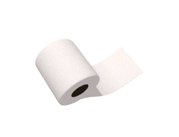

HOW TO:
richtig Klo putzen

Bis zu 40.000 Menschen sterben jedes Jahr in Deutschland, weil sie sich auf dem Klo mit gefährlichen Keimen infizieren.
Einer der Gründe: Es wird falsch geputzt. Doch es geht auch anders.
Umso wichtiger ist eine regelmäßige Reinigung des WCs. So bleibt der Grad der Verschmutzung und damit der Arbeitsaufwand überschaubar.
Hier finden Sie die besten Tipps, um das Klo richtig zu putzen und dabei Zeit zu sparen.